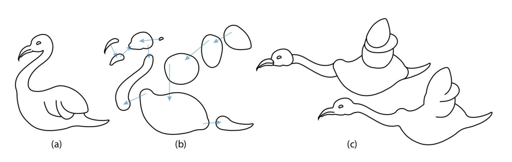

Structuring and Layering Contour Drawings of Organic Shapes
Even Entem (Université de Toulouse), Amal Dev Parakkat (Indian Institute of Technology), Marie-Paule Cani (Ecole Polytechnique), Loïc Barthe (Université de Toulouse)

Assumptions
Implicit 3D shape is "organic", meaning:
- It contains no self-overlapping part
- Curves representing the silhouette of the shape are closed
- Junctions with no tangent continuity are decorative and are not part of the core shape
Pipeline
1. Separate initial components
Each part →
2. Find salient junctions
3. Split on highest priority junction
4. Go to step 2 for each side of the split
1. Separate initial components
Curve types
- Contour: corresponds to the silhouette of the 3D shape
- Suggestive contour: connects to a contour with tangent continuity, forming a T junction, depicting a partial contour of a part
- Decorative element: everything else
- Inner isolated subgraphs (ignored in this paper)
- Trees of curves connected to the contour, either inside or outside the contour
TODO add illustration
Segmenting the drawing
Start with a graph where each vertex is an endpoint or junction
TODO illustration
Segmenting the drawing
Split tangent-continuous X junctions in two
TODO illustration
Segmenting the drawing
Find and separate decorative shapes: Connected components with non-tangent-continuous X junctions
TODO illustration
Segmenting the drawing
Find curves whose half edges are in different face cycles
- If there is tangent continuity at one end, keep it attached at that end as a suggestive contour
- Otherwise, disconnect it as a decorative element
TODO illustration
Segmenting the drawing
Process remaining connected components as separate parts
TODO illustration
2. Find salient junctions
Find skeleton
- Start by finding a set of maximal circles that are tangent to the contour in two places (Medial Axis Transform)
- Remove circles that would be covered if all radii were scaled up
- Connect circle centers to form a skeleton
- Each circle on the skeleton is a candidate, where its two tangent locations would get connected
TODO add illustration
Find salient junctions
- SSIA := sum of the length lk from A to an edge in direction k over a set of many k
- dk,A,B := |lkA - lkB| ||B - A||
- wk,A,B := Gaussian of dk,A,B - μ
- Δ(SSI)A,B
:= 1 ∑k wk,A,B m ∑ k = 1 wk,A,B dk,A,B≡ scale-invariant change in distance to edges
TODO illustration
Find salient junctions
- dSSI := sum of Δ(SSI) along points of a polyline
- Find the regions of the skeleton where dSSI > 0.45
- Each region extends from the skeleton to the curve where the circles were tangent
- Each region is a salient junction
TODO
3. Split on highest priority junction
Analysis
Alignment

Distance

What it's like to use

Editing environment
Split-screen with grammar and curves

What can you make with it?

What can you make with it?

What's next for this project?
- This is mostly proof-of-concept right now, could be added to a real modelling program
- Could add better support for volumes and areas
- Give guides a thickness where growth is uniformly encouraged
- Could also add target density within/around the guide
- This still requires you to write a grammar, which is not easy
- A GUI tool where grammar rules are components that can be combined would be useful
- Would also be good to visualize the distribution of results every time any randomization/choice is added to a rule
Questions?